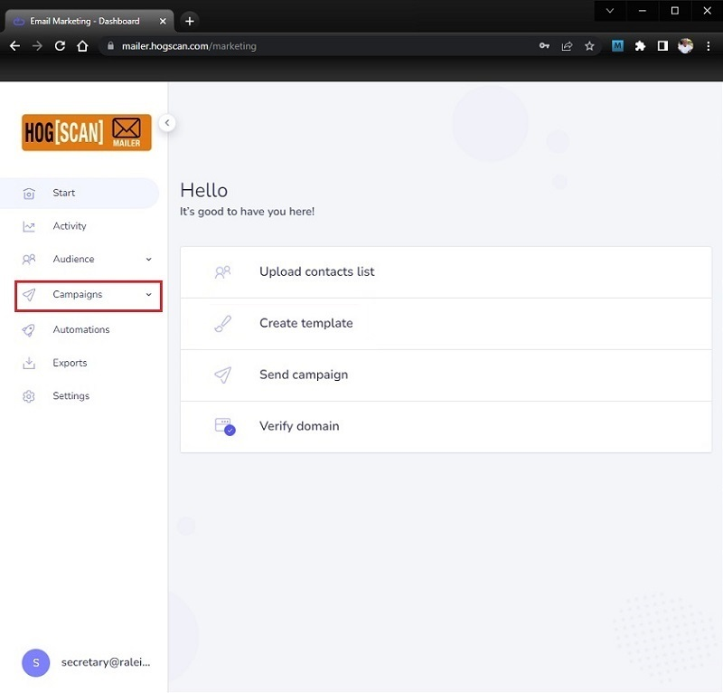
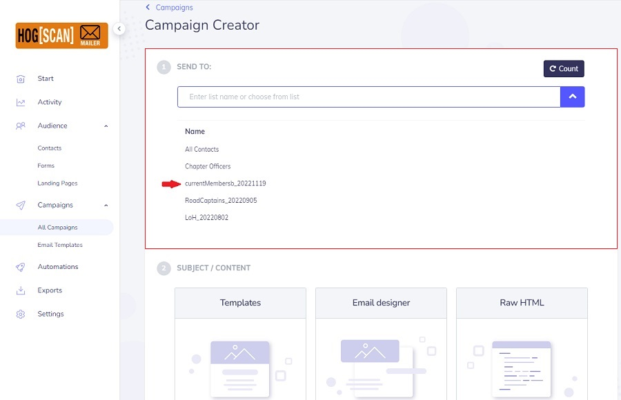
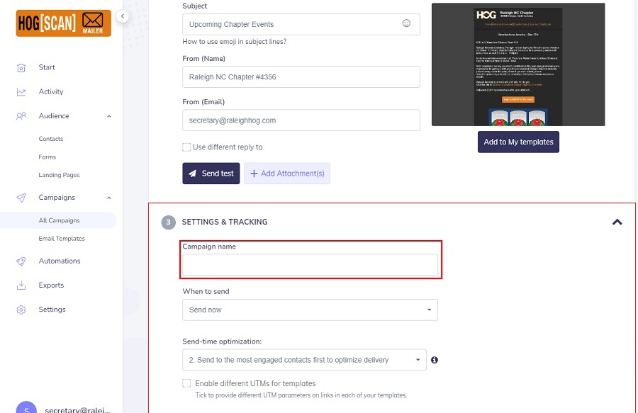

HOG[SCAN] Mailer
General notes, terminology and policies
- This environment is different than the website. There is only one, shared, account that is used for logging in. Do NOT change the Email or the Password.
- There are only two sections in which you will work. They will show as separate sections within this document. The two sections are;
- For the purposes of this document, a campaign is what was previously called an 'email blast'.
- In this document the Navagational Bar is referred to as the navbar.
- Every website has a navbar. It normally appears at the top of the page or on the left side of the page. As a user clicks links in the navbar to go to different pages within the website, the navbar retains its position making it easy for the user to navigate to other pages within the website.
- The Monthly Chapter Meeting template contains sensitive information, the link to join the Zoom meeting as well as the Meeting ID and Passcode
- This information should never be posted in the Event Calendar where it can be accessed by anyone in the world. It is only shared with current chapter members through the campaign.
Update a Template
- Login to the shared account for HOG[SCAN] Mailer. As this is shared do NOT change the Email or Password. See image below

- After a successful login you will see a navbar list on the left listing all that can be done with the HOG[SCAN] Mailer. This document is only concerned with Campaigns and Templates. Everything else is out of scope for this document.
Click Campaigns in the navbar to expand the dropdown to choose either All Campaigns or Email Templates.
As shown in the screenshot, you can also click the quick link for either Create template or Send campaign.
See image below
- Prior to sending a campaign it is necessary to prepare the template we want to send.Click Campaigns from the navbar to expand the dropdown, then click Email Templates. The following screen appears. Note on the page that the 'My templates' tab is selected as shown by it being underlined. See image below
- Note at the bottom of the navbar the blue circle with the S and partial address of secretary@ralei... Click it, and in the pop-up click Log out to logout when you have finished.
- Note, the templates may not display in the same order as shown in the previous image.
We mainly use only four (4) of the templates. The ones used most are;
- Upcoming Chapter Events - Sent out once a week, on Wednesday's, to inform members of upcoming rides for the weekend.
- Monthly Newsletter - Sent once a month to inform members that the monthly newsletter has been posted to the website.
- Monthly Chapter Meeting - Sent once a month, on Monday's, to remind/inform members of the upcoming monthly chapter meeting.
- Upcoming LoH Events - Sent once a month, on Wednesday's, to remind/inform LoH members of their monthly meeting.
- This same template is used for any special meetings or parties that are unique to, and for, LoH.
- The other templates were have, in no particular order, are;
- Monthly Newsletter & Chapter Mtg - Occasionally the Newsletter announcement coincides with the reminder for the upcoming monthly meeting. This lets us send one campaign instead of two.
- Upcoming Road Capt'n Events - Has not been used yet. Road Captain meetings are few and the ones we've had are open to members that want to be RC's.
- Christmas Party - This was recently created to remind members that there was a cut-off date for RSVPing to the Annual Christmas party. Can be used for the Valentine's party if the need arises.
- Dealership News - Recently created to as a favor to the dealership to let members know there were openings for Riding Academy coaches.
- Raleigh HOG Board Mtg - Was never used. It was an exercise in creating a template when we first started with the mailer.
- Do NOT change the template names. The names are used in the campaigns and we have a precedent/standard that has been in place for over a year.
- Editing a template
- The template has been saved and you are ready to send the campaign. Follow the instructions in the next section, Send a Campaign.
Send a Campaign
- This document assumes that you have logged in and modified a template and are now ready to send a campaign.
- If you have not logged in and modified a template, follow the instructions in the Update a Template section above.
- After updating a template, click the All Campaigns link in the navbar to prepare for sending the campaign. See image below
- The following steps will go through the steps to prepare sending an Upcoming Chapter Events campaign to all chapter members.
Steps to mail a different campaign, such as LoH Upcoming Events, will be similar. The exceptions being the mail group in step 3.2 and the template selected in step 3.5 will each be different.
- Click the Create campaign button found in the upper right corner of the page. see image below
- In the 1 SEND TO: section of the page that opens, click the down carat to expand the list of mail groups. see image below
- For the purpose of this document, the campaign is being sent to all chapter members.
Select currentMembersb_YYYYMMDD see image below
Note1, the numbers after a list name is a date in the format YYYYMMDD, where YYYY is the year, MM is the month, and DD is the day. If there are ever two lists with the same name, use the one that has the most current date.
Note2, the Chapter Officers, Road_Captains_YYYYMMDD and LoH_YYYYMMDD lists are subsets of the currentMembers list. Do not select any of these, or the All Contacts list, otherwise members will receive duplicate emails and that is considered spam.
Note3, if a campaign is being sent to LoH only, then you would select only LoH_YYYYMMDD

- In the 2 SUBJECT / CONTENT section, click the Templates placeholder image. see image below
- In the page that opens, hover over the Upcoming Chapter Events template and click the select icon. see image below
- You are brought back to the Campaign Creator page. Notice that the Subject, From (Name) and From (Email) boxes have been filled in for you and a thumbnail image of the template is shown.
Do not change/alter any of the filled-in fields
Optionally, you can click the Send test button to send the campaign to yourself
see image below
- Expand the 3 SETTINGS & TRACKING section and fill in the Campaign name field.
Something simple, such as "upcoming week xx" where "xx" is the week number will suffice. see image below
Leave When to send at the default of "Send now"
Leave Send-time optimization: at the default of "2. Send to the most engaged contacts first to optimize delivery"
Do NOT check the box to "Enable different UTMs for templates"

- There is nothing to do in 4 LEGAL. Leave it as it is.
- Click the Send campaign button. see image below
- Click the Confirm button in the pop-up to send the campaign. see image below
- You will see the following screen indicating success.